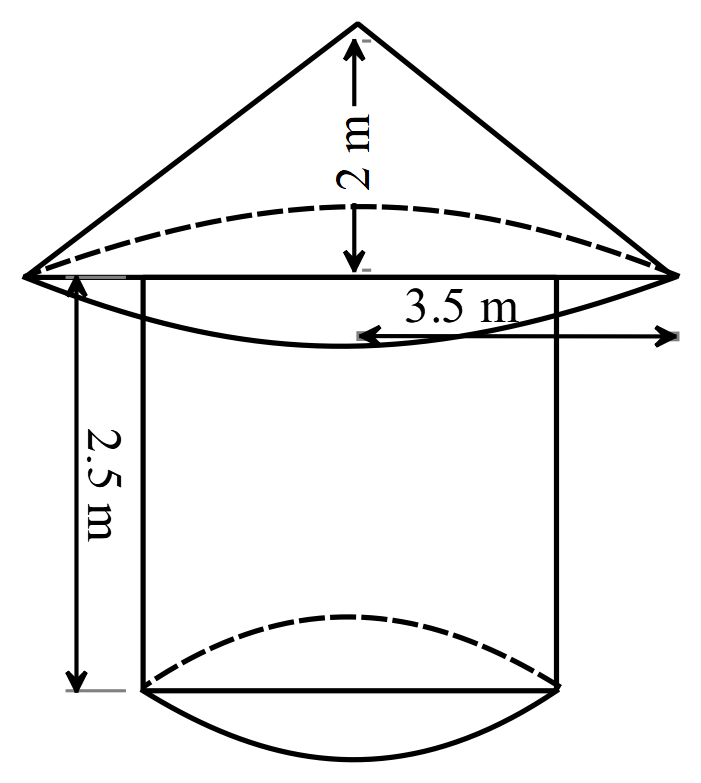

SSSCE 1999
Question 1:
Consider the following two statements:
\(P:\) All students are hardworking
\(Q:\) No hardworking person is careless
- Draw a Venn diagram to illustrate the above statements.
- Which of the following statements are valid or not valid conclusions from \(P\) and \(Q\)?
\(\alpha\)) Ama is a student \(\Rightarrow\) Ama is not careless.
\(\beta\)) Kwame is hardworking \(\Rightarrow\) Kwame is a student.
\(\gamma\)) Esi is careless \(\Rightarrow\) Esi is not a student.
- \(A=\{ 1,2,3,4,6 \}\) and \(B=\{ 1,2,3,6,9,18 \}\) are subsets of the universal set \(\mu =\{ 1,2,3,4,6,9,12,18,36 \}\). List the elements of
- \(A^\prime \cap B\)
- \((A^\prime \cap B)^\prime\)
Question 2:
If \(\displaystyle\frac{3m-n}{5m-n}=\displaystyle\frac{p}{q}\), express \(m\) in terms of \(p,q\) and \(n\).
Without using tables and calculator, express \(\displaystyle\frac{(0.00042\times 10^{-8})(15,000)}{(5000\times 10^7)(0.0021\times 10^{14})}\) in the form \(a \times 10^n\), where \(1<a<10\) and \(n\) is an integer.
Question 3:
- Copy and complete the multiplication, \(\otimes\), table for modulo 8 on the set \(\{ 2,3,4,5,6,7 \}\).
| \(\otimes\) | 2 | 3 | 4 | 5 | 6 | 7 |
|---|---|---|---|---|---|---|
| 2 | 4 | 6 | 0 | 2 | 4 | 6 |
| 3 | 6 | 4 | 2 | 3 | ||
| 4 | 0 | 4 | 4 | 0 | 4 | |
| 5 | 7 | 4 | 1 | 3 | ||
| 6 | 4 | 2 | 0 | 6 | 4 | |
| 7 | 6 | 4 | 2 | 1 |
- From your table, find
- the truth set of the equation \(n \otimes n=1\)
- the value of \((3 \otimes 5)\otimes 6\)
Question 4:
\(A(-2,3), B(2, -1),C(5, 0)\) and \(D(x, y)\) are the vertices of the parallelogram \(ABCD\).
- Find \(\overrightarrow{AB}\) and \(\overrightarrow{DC}\). Hence, find the coordinates of \(D\).
- Calculate, correct to one decimal place \(|\overrightarrow{DB}|\).
Question 5:
Using a ruler and a pair of compasses only, construct
- triangle \(ABC\) with \(|AB|=6\) cm, \(|BC|=8\) cm and \(\angle ABC=90^\circ\).
- a point \(D\) on \(AC\), which is equidistant from \(B\) and \(C\).
- Measure \(|BD|\)
Question 6:
- Simplify \(3\sqrt{27}-2\sqrt{3}(4\sqrt{3}-5\sqrt{12})\), leaving your answer in surd form.
- A variable \(y\) is partly constant and partly varies as the square of \(x\). When \(x=2, y=6\) and when \(x=3, y=10\).
- Find the equation connecting \(x\) and \(y\).
- Find the values of \(x\) when \(y=5\).
- Find the values of \(y\) when \(x=4\).
Question 7:
- In the diagram(not drawn to scale), \(ABCD\) is a quadrilateral \(\angle ABC=\angle ACD=90^\circ, |AB|=3\) cm, \(|BC|=4\) cm and \(|AD|=13\) cm. Find the area of the quadrilateral.
- In the diagram(not drawn to scale), \(AB\) is a diameter if the circle \(ABCD\). \(DC\) is parallel to \(AB\) and \(\angle BAC=25^\circ\). Calculate
- \(\angle ADC\)
- \(\angle CAD\)
Question 8:
In a certain country, the annual income tax payable by an individual is as follows
| Amount(in cedis) | Rate of Tax | |
|---|---|---|
| First | 140,700 | Free Tax |
| " | 100,000 | 5% |
| " | 150,000 | 15% |
| " | 200,000 | 25% |
| " | 300,000 | 35% |
| " | 350,000 | 45% |
| " | 400,000 | 55% |
Mr. Hermosa’s annual salary is 1,390,700.00 cedis. Calculate:
- his taxable income
- his annual income
- the percentage of his income that went into tax, correct to two significant figures.
Question 9:
- Copy and complete the table of values for the relation \(y=x^2-2x-3\) for the interval \(-2 \leq x \leq 4\).
| \(x\) | \(-2\) | \(-1.5\) | \(-1\) | \(0\) | \(1\) | \(2\) | \(2.5\) | \(3\) | \(3.5\) | \(4\) |
|---|---|---|---|---|---|---|---|---|---|---|
| \(y\) | \(5\) | \(-1\) | \(0\) |
- Using a scale of 2 cm to 1 unit on both axes, draw the graph of of the relation \(y=x^2-2x-3\) for the given interval.
- Use your graph to find
- the solution of \(x^2-2x-2=0\);
- the equation of the line of symmetry;
- the range of values of \(x\) for which \(y\) is negative.
Question 10:
\(A, B, X\) and \(Y\) are four points in a horizontal plane. \(B\) is on a bearing of \(090^\circ\) from \(A\). \(X\) is 7.5 m due north of \(B\) and on a bearing of \(052^\circ\) from \(A\). \(Y\) is due north of \(A\) and on a bearing of \(340\) from \(B\). calculate correct to three significant figures:
- \(|AB|\)
- \(|AY|\)
- the components of \(\overrightarrow{XY}\)
- the distance and bearing of \(Y\) from \(X\).
Question 11:
The table below shows the height in millimetres of a sample of 250 seedlings on an experimental farm.
| Height of seedlings(mm) | \(0-4\) | \(5-9\) | \(10-14\) | \(15-19\) | \(20-24\) | \(25-29\) | \(30-34\) | \(35-39\) |
|---|---|---|---|---|---|---|---|---|
| No. of seedlings | 40 | 45 | 60 | 40 | 30 | 21 | 10 | 5 |
- Construct a cumulative frequency table and use it to draw a cumulative frequency curve for the sample.
- Using your cumulative frequency curve, find
- the first and third quartiles
- the percentage of the sample of seedlings whose heights are above 22 mm.
Question 12:
The diagram shows a hut made if a onical roof and a cylindrical wall. The height of the roof is 2 m and its base is 3.5 m. The cylindrical wall has a height of 2.5 m and base area of 28.26 m\(^2\).

- calculate, correct to three significant figures,
- the slant height of the conical roof
- the surface area of the conical roof
- the external surface area of the wall.
- If the cost of painting a square metre surface is 450.00 cedis, calculate the total cost of painting the outer area of the wall and the roof of the hut. [Take \(\pi\) = 3.14]